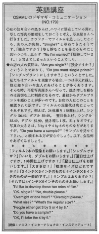

フィルムの現像をお願いします。（改訂中）
私の知り合いの奥さんは、ハワイに滞在している間に、写した写真を整理しておこうと考え、写真屋さんへ行きました。カウンターでフィルムを差し出したところ、店の人が突然、¨Single?¨ と尋ねてきたそうです。「独身ですか？」等と妙なことを尋ねるものだと思いつつも、思わず、 ¨No I´m married.¨／「結婚しています。」と答えてしまったということでした。
お店の人の質問は、 ¨Are you single?¨ 「独身ですか？」ということではなく、 ¨Do you want single prints?¨ 「シングルプリントにしますか？」ということでした。
私たちはフィルムを現像する場合、一つは手元に残し、他は知り合いや友人にあげることが多くあります。そんな時、再度，写真屋さんへ行って、焼き増しを頼むのは面倒な上に割高になるので、最初からダブルプリントを頼むことが多いのです。お店の人はこのことを確認された訳です。フィルムの現像代は店によってそれぞれです。例えば、２４枚撮り1時間仕上げ、シングル$6.49、ダブル$9.49．翌日仕上げ、シングル$5.49、ダブル$7.99、焼き増し1 枚、21セントなどです。写真の大きさは、3by4や 4by6 のものなどがありますが、 ¨Do you have a sample?¨ 「サンプルを見せて下さい。」と頼まれる方が安心でしょう。以下、会話例をあげてみましょう。
「フィルム2本の現像をお願いします」「シングルですか」「いいえ、ダブルをお願いします」「翌日仕上げですか、1時間仕上げですか」「翌日仕上げをお願いします」「大きさは」「標準サイズはどれですか」「３インチx５インチのものと４インチx６インチのものが一般的です」「サンプルはありますか」「それでは４インチx６インチのものをお願いします」
I´d like to develop these two roles of film.
OK. single?
No, double please.
Overnight or one hour?
Overnight please.
What size?
What´s the regular size?
People either get 3 by 5 or 4 by 6.
Do you have a sample?
OK, I´ĺl take the 4 by 6.

| © 1995-2013 NACOS International Institute. All Rights Reserved. |